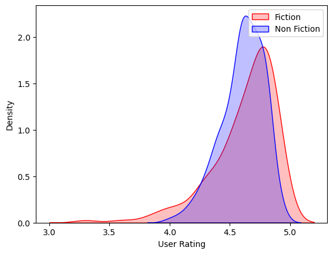
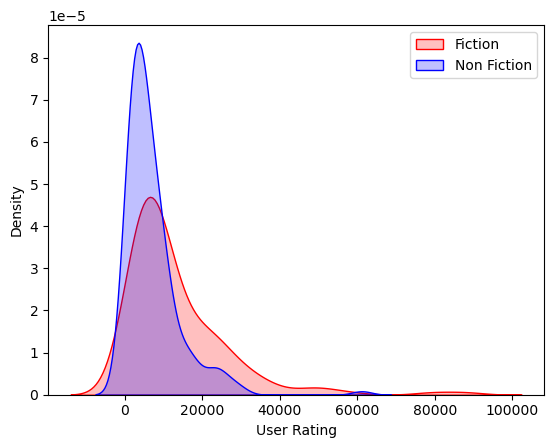
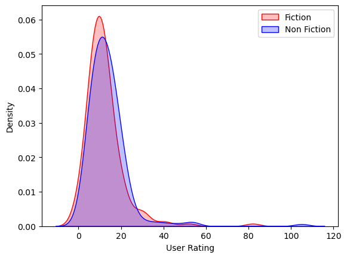

# Import libraries
import numpy as np
import pandas as pd
import matplotlib.pyplot as plt
import seaborn as sns
from scipy import statsExploring Hypothesis Testing: A Series for Beginners
2. Data Understanding
2.2 Data description
df = pd.read_csv("bestsellers with categories.csv")
df.head(30)| Name | Author | User Rating | Reviews | Price | Year | Genre | |
|---|---|---|---|---|---|---|---|
| 0 | 10-Day Green Smoothie Cleanse | JJ Smith | 4.7 | 17350 | 8 | 2016 | Non Fiction |
| 1 | 11/22/63: A Novel | Stephen King | 4.6 | 2052 | 22 | 2011 | Fiction |
| 2 | 12 Rules for Life: An Antidote to Chaos | Jordan B. Peterson | 4.7 | 18979 | 15 | 2018 | Non Fiction |
| 3 | 1984 (Signet Classics) | George Orwell | 4.7 | 21424 | 6 | 2017 | Fiction |
| 4 | 5,000 Awesome Facts (About Everything!) (Natio... | National Geographic Kids | 4.8 | 7665 | 12 | 2019 | Non Fiction |
| 5 | A Dance with Dragons (A Song of Ice and Fire) | George R. R. Martin | 4.4 | 12643 | 11 | 2011 | Fiction |
| 6 | A Game of Thrones / A Clash of Kings / A Storm... | George R. R. Martin | 4.7 | 19735 | 30 | 2014 | Fiction |
| 7 | A Gentleman in Moscow: A Novel | Amor Towles | 4.7 | 19699 | 15 | 2017 | Fiction |
| 8 | A Higher Loyalty: Truth, Lies, and Leadership | James Comey | 4.7 | 5983 | 3 | 2018 | Non Fiction |
| 9 | A Man Called Ove: A Novel | Fredrik Backman | 4.6 | 23848 | 8 | 2016 | Fiction |
| 10 | A Man Called Ove: A Novel | Fredrik Backman | 4.6 | 23848 | 8 | 2017 | Fiction |
| 11 | A Patriot's History of the United States: From... | Larry Schweikart | 4.6 | 460 | 2 | 2010 | Non Fiction |
| 12 | A Stolen Life: A Memoir | Jaycee Dugard | 4.6 | 4149 | 32 | 2011 | Non Fiction |
| 13 | A Wrinkle in Time (Time Quintet) | Madeleine L'Engle | 4.5 | 5153 | 5 | 2018 | Fiction |
| 14 | Act Like a Lady, Think Like a Man: What Men Re... | Steve Harvey | 4.6 | 5013 | 17 | 2009 | Non Fiction |
| 15 | Adult Coloring Book Designs: Stress Relief Col... | Adult Coloring Book Designs | 4.5 | 2313 | 4 | 2016 | Non Fiction |
| 16 | Adult Coloring Book: Stress Relieving Animal D... | Blue Star Coloring | 4.6 | 2925 | 6 | 2015 | Non Fiction |
| 17 | Adult Coloring Book: Stress Relieving Patterns | Blue Star Coloring | 4.4 | 2951 | 6 | 2015 | Non Fiction |
| 18 | Adult Coloring Books: A Coloring Book for Adul... | Coloring Books for Adults | 4.5 | 2426 | 8 | 2015 | Non Fiction |
| 19 | Alexander Hamilton | Ron Chernow | 4.8 | 9198 | 13 | 2016 | Non Fiction |
| 20 | All the Light We Cannot See | Anthony Doerr | 4.6 | 36348 | 14 | 2014 | Fiction |
| 21 | All the Light We Cannot See | Anthony Doerr | 4.6 | 36348 | 14 | 2015 | Fiction |
| 22 | Allegiant | Veronica Roth | 3.9 | 6310 | 13 | 2013 | Fiction |
| 23 | American Sniper: The Autobiography of the Most... | Chris Kyle | 4.6 | 15921 | 9 | 2015 | Non Fiction |
| 24 | And the Mountains Echoed | Khaled Hosseini | 4.3 | 12159 | 13 | 2013 | Fiction |
| 25 | Arguing with Idiots: How to Stop Small Minds a... | Glenn Beck | 4.6 | 798 | 5 | 2009 | Non Fiction |
| 26 | Astrophysics for People in a Hurry | Neil deGrasse Tyson | 4.7 | 9374 | 9 | 2017 | Non Fiction |
| 27 | Autobiography of Mark Twain, Vol. 1 | Mark Twain | 4.2 | 491 | 14 | 2010 | Non Fiction |
| 28 | Baby Touch and Feel: Animals | DK | 4.6 | 5360 | 5 | 2015 | Non Fiction |
| 29 | Balance (Angie's Extreme Stress Menders) | Angie Grace | 4.6 | 1909 | 11 | 2015 | Non Fiction |
- Name
- Título del libro
- Unidad: texto (categoría)
- Author
- Nombre del autor
- Unidad: texto (categoría)
- User Rating
- Calificación promedio del libro por los usuarios
- Unidad: número entre 0 y 5 (con decimales)
- Reviews
- Número de reseñas
- Unidad: número entero
- Price
- Precio del libro
- Unidad: número entero
- Year
- Año en el que el libro fue de los más vendidos
- Unidad: año (número entero)
- Genre
- Género del libro simplificado (Fiction o Non Fiction)
- Unidad: categorico con dos valores posibles
3. Data preparation
3.1 Typecasting
1. Business Understanding
dataset source: https://www.kaggle.com/datasets/sootersaalu/amazon-top-50-bestselling-books-2009-2019/data
Context
Datos sobre los 50 libros más vendidos en Amazon de 2009 a 2019.
Hypothesis to Test
Vamos a responder a las siguientes preguntas con validez estadística:
- ¿Los géneros difieren en User Rating?
- ¿Los géneros difieren en número de Reviews?
- ¿Los géneros difieren en términos de precio?
# comprobamos el tipo de datos de las columnas
df.dtypesName object
Author object
User Rating float64
Reviews int64
Price int64
Year int64
Genre object
dtype: objectcolumnas_categoricas = ["Genre", "Name", "Author"]
df[columnas_categoricas] = df[columnas_categoricas].astype("category")df.dtypesName category
Author category
User Rating float64
Reviews int64
Price int64
Year int64
Genre category
dtype: object3.2 Handling Duplicates
Comprobar si hay autores o títulos iguales pero escritos diferente.
from fuzzywuzzy import fuzz
# Función para encontrar nombres de autores similares
def encontrar_similares(df, columna):
autores = df[columna].unique()
duplicados = []
for i, autor1 in enumerate(autores):
for autor2 in autores[i + 1 :]:
ratio = fuzz.ratio(autor1, autor2)
if ratio > 90: # Puedes ajustar este umbral según tu criterio
duplicados.append((autor1, autor2))
return duplicados# Encuentra nombres de autores similares
duplicados = encontrar_similares(df, "Author")
print(
"Nombres de autores que se refieren al mismo autor pero están escritos diferente:"
)
for dup in duplicados:
print(dup)Nombres de autores que se refieren al mismo autor pero están escritos diferente:
('George R. R. Martin', 'George R.R. Martin')
('J.K. Rowling', 'J. K. Rowling')# Replace the names of the Authors with the correct ones
df = df.replace("George R. R. Martin", "George R.R. Martin")
df = df.replace("J. K. Rowling", "J.K. Rowling")# Encuentra nombres de títulos similares
duplicados = encontrar_similares(df, "Name")
print(
"Nombres de autores que se refieren al mismo autor pero están escritos diferente:"
)
for dup in duplicados:
print(dup)Nombres de autores que se refieren al mismo autor pero están escritos diferente:
('The 5 Love Languages: The Secret to Love That Lasts', 'The 5 Love Languages: The Secret to Love that Lasts')
('The Girl Who Played with Fire (Millennium Series)', 'The Girl Who Played with Fire (Millennium)')# Replace the names of the Authors with the correct ones
df = df.replace(
"The 5 Love Languages: The Secret to Love That Lasts",
"The 5 Love Languages: The Secret to Love that Lasts",
)
df = df.replace(
"The Girl Who Played with Fire (Millennium Series)",
"The Girl Who Played with Fire (Millennium)",
)df| Name | Author | User Rating | Reviews | Price | Year | Genre | |
|---|---|---|---|---|---|---|---|
| 0 | 10-Day Green Smoothie Cleanse | JJ Smith | 4.7 | 17350 | 8 | 2016 | Non Fiction |
| 1 | 11/22/63: A Novel | Stephen King | 4.6 | 2052 | 22 | 2011 | Fiction |
| 2 | 12 Rules for Life: An Antidote to Chaos | Jordan B. Peterson | 4.7 | 18979 | 15 | 2018 | Non Fiction |
| 3 | 1984 (Signet Classics) | George Orwell | 4.7 | 21424 | 6 | 2017 | Fiction |
| 4 | 5,000 Awesome Facts (About Everything!) (Natio... | National Geographic Kids | 4.8 | 7665 | 12 | 2019 | Non Fiction |
| ... | ... | ... | ... | ... | ... | ... | ... |
| 545 | Wrecking Ball (Diary of a Wimpy Kid Book 14) | Jeff Kinney | 4.9 | 9413 | 8 | 2019 | Fiction |
| 546 | You Are a Badass: How to Stop Doubting Your Gr... | Jen Sincero | 4.7 | 14331 | 8 | 2016 | Non Fiction |
| 547 | You Are a Badass: How to Stop Doubting Your Gr... | Jen Sincero | 4.7 | 14331 | 8 | 2017 | Non Fiction |
| 548 | You Are a Badass: How to Stop Doubting Your Gr... | Jen Sincero | 4.7 | 14331 | 8 | 2018 | Non Fiction |
| 549 | You Are a Badass: How to Stop Doubting Your Gr... | Jen Sincero | 4.7 | 14331 | 8 | 2019 | Non Fiction |
550 rows × 7 columns
# número de filas duplicadas
df.duplicated().sum()0Es normal no encontrar duplicados en este caso, hay libros que se repiten pero es imposible que coincidan en “Year”. No es un error por si mismo. Pero hay un problema. Las “Reviews” deberían ser las que el libro tenia el año en el que fue de los mas vendidos. En lugar de eso son las del último año. Esto puede deberse a que el autor del dataset no tuvo acceso al historial de las reseñas.
Es importante tener en cuenta esto para el análisis.
Vamos a utilizar unicamente la muestra más reciente de cada libro.
# todos los libros con el titulo repetido
df[df.duplicated("Name")].head(20)| Name | Author | User Rating | Reviews | Price | Year | Genre | |
|---|---|---|---|---|---|---|---|
| 10 | A Man Called Ove: A Novel | Fredrik Backman | 4.6 | 23848 | 8 | 2017 | Fiction |
| 21 | All the Light We Cannot See | Anthony Doerr | 4.6 | 36348 | 14 | 2015 | Fiction |
| 33 | Becoming | Michelle Obama | 4.8 | 61133 | 11 | 2019 | Non Fiction |
| 36 | Between the World and Me | Ta-Nehisi Coates | 4.7 | 10070 | 13 | 2016 | Non Fiction |
| 41 | Brown Bear, Brown Bear, What Do You See? | Bill Martin Jr. | 4.9 | 14344 | 5 | 2019 | Fiction |
| 47 | Catching Fire (The Hunger Games) | Suzanne Collins | 4.7 | 22614 | 11 | 2011 | Fiction |
| 48 | Catching Fire (The Hunger Games) | Suzanne Collins | 4.7 | 22614 | 11 | 2012 | Fiction |
| 51 | Crazy Love: Overwhelmed by a Relentless God | Francis Chan | 4.7 | 1542 | 14 | 2010 | Non Fiction |
| 52 | Crazy Love: Overwhelmed by a Relentless God | Francis Chan | 4.7 | 1542 | 14 | 2011 | Non Fiction |
| 57 | Cutting for Stone | Abraham Verghese | 4.6 | 4866 | 11 | 2011 | Fiction |
| 64 | Dear Zoo: A Lift-the-Flap Book | Rod Campbell | 4.8 | 10922 | 5 | 2016 | Fiction |
| 65 | Dear Zoo: A Lift-the-Flap Book | Rod Campbell | 4.8 | 10922 | 5 | 2017 | Fiction |
| 66 | Dear Zoo: A Lift-the-Flap Book | Rod Campbell | 4.8 | 10922 | 5 | 2018 | Fiction |
| 70 | Diagnostic and Statistical Manual of Mental Di... | American Psychiatric Association | 4.5 | 6679 | 105 | 2014 | Non Fiction |
| 76 | Divergent | Veronica Roth | 4.6 | 27098 | 15 | 2014 | Fiction |
| 84 | Dog Man: Brawl of the Wild: From the Creator o... | Dav Pilkey | 4.9 | 7235 | 4 | 2019 | Fiction |
| 94 | Eat to Live: The Amazing Nutrient-Rich Program... | Joel Fuhrman MD | 4.5 | 6346 | 9 | 2012 | Non Fiction |
| 98 | Educated: A Memoir | Tara Westover | 4.7 | 28729 | 15 | 2019 | Non Fiction |
| 101 | Fahrenheit 451 | Ray Bradbury | 4.6 | 10721 | 8 | 2018 | Fiction |
| 107 | Fifty Shades of Grey: Book One of the Fifty Sh... | E L James | 3.8 | 47265 | 14 | 2013 | Fiction |
# Drop duplicates
bestsellers = df.drop_duplicates(subset="Name", keep="last")
bestsellers| Name | Author | User Rating | Reviews | Price | Year | Genre | |
|---|---|---|---|---|---|---|---|
| 0 | 10-Day Green Smoothie Cleanse | JJ Smith | 4.7 | 17350 | 8 | 2016 | Non Fiction |
| 1 | 11/22/63: A Novel | Stephen King | 4.6 | 2052 | 22 | 2011 | Fiction |
| 2 | 12 Rules for Life: An Antidote to Chaos | Jordan B. Peterson | 4.7 | 18979 | 15 | 2018 | Non Fiction |
| 3 | 1984 (Signet Classics) | George Orwell | 4.7 | 21424 | 6 | 2017 | Fiction |
| 4 | 5,000 Awesome Facts (About Everything!) (Natio... | National Geographic Kids | 4.8 | 7665 | 12 | 2019 | Non Fiction |
| ... | ... | ... | ... | ... | ... | ... | ... |
| 538 | Winter of the World: Book Two of the Century T... | Ken Follett | 4.5 | 10760 | 15 | 2012 | Fiction |
| 539 | Women Food and God: An Unexpected Path to Almo... | Geneen Roth | 4.2 | 1302 | 11 | 2010 | Non Fiction |
| 544 | Wonder | R. J. Palacio | 4.8 | 21625 | 9 | 2017 | Fiction |
| 545 | Wrecking Ball (Diary of a Wimpy Kid Book 14) | Jeff Kinney | 4.9 | 9413 | 8 | 2019 | Fiction |
| 549 | You Are a Badass: How to Stop Doubting Your Gr... | Jen Sincero | 4.7 | 14331 | 8 | 2019 | Non Fiction |
349 rows × 7 columns
Resumen: - Hemos corregido los errores ortográficos de los títulos y autores. - Hemos seleccionado las muestras más recientes de cada libro.
Hemos reducido el tamaño del dataset de 550 a 349 muestras.
3.3 Outlier Analysis
3.3.2 Usando boxplot y IQR
IQR: El rango intercuartil (IQR) es la diferencia entre el tercer cuartil (Q3) y el primer cuartil (Q1). Los valores que caen por debajo de Q1 - 1.5 * IQR o por encima de Q3 + 1.5 * IQR se consideran outliers.
Los valores fuera del de este rango, son los que se representa como puntos en los bloxpots.
import plotly.express as px
selected_columns = ["Reviews", "Price"]
for column in selected_columns:
fig = px.box(df, x=column, title=f"Boxplot of {column}")
fig.update_layout(title_x=0.5) # Centra el título
fig.show()Unable to display output for mime type(s): application/vnd.plotly.v1+jsonUnable to display output for mime type(s): application/vnd.plotly.v1+jsonObservaciones:
- age: no se detectan outliers
- BMI: existen outliers, personas con una alta obesidad
- charges: existen outliers, personas con cargos muy altos al seguro
3.4 Zero & Near Zero Variance Features
bestsellers.describe()| User Rating | Reviews | Price | Year | |
|---|---|---|---|---|
| count | 349.000000 | 349.000000 | 349.000000 | 349.000000 |
| mean | 4.608596 | 9811.922636 | 12.962751 | 2014.128940 |
| std | 0.227266 | 10899.783863 | 10.011562 | 3.377239 |
| min | 3.300000 | 37.000000 | 0.000000 | 2009.000000 |
| 25% | 4.500000 | 3428.000000 | 8.000000 | 2011.000000 |
| 50% | 4.600000 | 6310.000000 | 11.000000 | 2014.000000 |
| 75% | 4.800000 | 11550.000000 | 16.000000 | 2017.000000 |
| max | 4.900000 | 87841.000000 | 105.000000 | 2019.000000 |
Variables númericas
selected_columns = ["User Rating", "Reviews", "Price"]
# Calcular la varianza de cada columna
variances = bestsellers[selected_columns].var()
# Definir un umbral para la varianza
threshold = 0.1
# Identificar las columnas con varianza cercana a cero o muy pequeña
zero_variance_cols = variances[variances <= threshold].index
print("Columnas con Zero & Near Zero Variance:")
print(zero_variance_cols)Columnas con Zero & Near Zero Variance:
Index(['User Rating'], dtype='object')Variables categoricas. No tiene sentido en este analisis en este caso.
Observiaciones:
- No se detectan variables con Zero & Near Zero Variance
3.5 Missing values
bestsellers.isnull().sum()Name 0
Author 0
User Rating 0
Reviews 0
Price 0
Year 0
Genre 0
dtype: int64Observiaciones:
- No hay Missing values
4. Hipothesis Testing
Vamos a responder a las siguientes preguntas con validez estadística: - ¿Los géneros difieren en User Rating? - ¿Los géneros difieren en número de Reviews? - ¿Los géneros difieren en términos de precio?
¿Los géneros difieren en User Rating?
Vamos a crear una variable para cada grupo de interes y representarlos gráficamente.
fiction_bestsellers = bestsellers[bestsellers["Genre"] == "Fiction"]
nonfiction_bestsellers = bestsellers[bestsellers["Genre"] == "Non Fiction"]sns.kdeplot(fiction_bestsellers["User Rating"], fill=True, color="r")
sns.kdeplot(nonfiction_bestsellers["User Rating"], fill=True, color="b")
plt.legend(["Fiction", "Non Fiction"])
plt.xlabel("User Rating")
plt.ylabel("Density")
plt.show()
# Calcular el coeficiente de asimetría
skewness = stats.skew(bestsellers["User Rating"])
print("Coeficiente de asimetría:", skewness)
if skewness > 0:
print("La distribución está positivamente sesgada.")
elif skewness < 0:
print("La distribución está negativamente sesgada.")
else:
print("La distribución es simétrica.")Coeficiente de asimetría: -1.521358275451138
La distribución está negativamente sesgada.Número de observaciones para cada grupo:
bestsellers["Genre"].value_counts()Genre
Non Fiction 190
Fiction 159
Name: count, dtype: int64Realizamos un test de normalidad para cada grupo:
from scipy import stats
def shapiro_test(data, alpha=0.05):
"""
Realiza la prueba de Shapiro-Wilk para verificar la normalidad de los datos.
Parameters:
data (array-like): Los datos a analizar.
alpha (float): Nivel de significancia.
Returns:
str: El resultado de la prueba.
"""
statistic, p_value = stats.shapiro(data)
if p_value < alpha:
return (
"Rechazamos la hipótesis nula. Los datos no siguen una distribución normal."
)
else:
return "Fallamos al rechazar la hipótesis nula. Los datos pueden considerarse normalmente distribuidos."
result_fiction = shapiro_test(fiction_bestsellers["User Rating"])
result_nonfiction = shapiro_test(nonfiction_bestsellers["User Rating"])
print("Para bestsellers de ficción:", result_fiction)
print("Para bestsellers de no ficción:", result_nonfiction)Para bestsellers de ficción: Rechazamos la hipótesis nula. Los datos no siguen una distribución normal.
Para bestsellers de no ficción: Rechazamos la hipótesis nula. Los datos no siguen una distribución normal.Estudiemos la relación entre las varianzas de cada grupo.
# Realiza el Test de Levene
statistic, p_value = stats.levene(
fiction_bestsellers["User Rating"], nonfiction_bestsellers["User Rating"]
)
# Nivel de significancia
alpha = 0.05
# Comprueba la significancia
if p_value < alpha:
print("Rechazamos la hipótesis nula. Las varianzas no son similares")
else:
print("Fallamos al rechazar la hipótesis nula. Las varianzas son similares")Rechazamos la hipótesis nula. Las varianzas no son similares# varianza de los grupos
bestsellers.groupby(["Genre"])["User Rating"].var()Genre
Fiction 0.075720
Non Fiction 0.031736
Name: User Rating, dtype: float641. Seleccionamos la hipotesis y el nivel de significancia
H0: El “User Rating” de los libros de ficción es igual que el de los libros de no ficción
Ha: El “User Rating” de los libros de ficción es diferente que el de los libros de no ficción
alpha = 0.05
2. Identificamos el tipo de test
Deseamos comparar las medias de dos grupos de nuestra Sample. Por lo que un 2-Sample t-Test parece lo adecuado. Lo primero es ver si se cumplen los requisitos del test.
2.1 Requisitos del test
[Book:Hypothesis Testing An Intuitive Guide For Making Data Driven Decisions Page: 48 Section: 2-Sample t-Tests] - Tenemos un Sample representativo de la población? Si. - Los datos son continuos? - En este contexto, los “User Rating” que van de 0 a 5 con un único decimal pueden considerarse como datos continuos. Sim embargo, observando las gráficas, vemos que la mayoría de los valores se encuetran en un intervalor muy pequeño (mayores a 4.0). Esto dificulta el poder considerarlo continuos. - Las muestras siguen una distribución normal o hay más de 15 observaciones - No, las muestras no siguen una distribución normal. Pero hay más de 15 observaciones en cada grupo, gracias al teorema del límite central podemos renunciar al supuesto de normalidad. - Los grupos son independientes? Si. - Las varianzas son iguales (o al menos similares)? - No.
Por la falta de continuidad en los datos, vamos a realizar un test no paramétrico Mann-Whitney.
[Book:Hypothesis Testing An Intuitive Guide For Making Data Driven Decisions Page: 341 Section: Analyzing Likert Scale Data]
Para realizar el test vamos a usar scipy.stats.mannwhitneyu
# Realiza el test de Mann-Whitney
statistic, p_value = stats.mannwhitneyu(
nonfiction_bestsellers["User Rating"], fiction_bestsellers["User Rating"]
)
# Imprime los resultados
print("Valor p:", p_value)
# Comprueba la significancia
alpha = 0.05 # Nivel de significancia
if p_value < alpha:
print(
"Rechazamos la hipótesis nula. Hay diferencias significativas entre los grupos."
)
else:
print(
"Fallamos al rechazar la hipótesis nula. No hay diferencias significativas entre los grupos."
)Valor p: 0.019840907319029977
Rechazamos la hipótesis nula. Hay diferencias significativas entre los grupos.¿Los géneros difieren en número de Reviews?
Representamos gráficamente los grupos de interés.
sns.kdeplot(fiction_bestsellers["Reviews"], fill=True, color="r")
sns.kdeplot(nonfiction_bestsellers["Reviews"], fill=True, color="b")
plt.legend(["Fiction", "Non Fiction"])
plt.xlabel("User Rating")
plt.ylabel("Density")
plt.show()
# Calcular el coeficiente de asimetría
skewness = stats.skew(bestsellers["Reviews"])
print("Coeficiente de asimetría:", skewness)
if skewness > 0:
print("La distribución está positivamente sesgada.")
elif skewness < 0:
print("La distribución está negativamente sesgada.")
else:
print("La distribución es simétrica.")Coeficiente de asimetría: 3.119812029552558
La distribución está positivamente sesgada.Número de observaciones para cada grupo:
bestsellers["Genre"].value_counts()Genre
Non Fiction 190
Fiction 159
Name: count, dtype: int64Realizamos un test de normalidad para cada grupo:
from scipy import stats
def shapiro_test(data, alpha=0.05):
"""
Realiza la prueba de Shapiro-Wilk para verificar la normalidad de los datos.
Parameters:
data (array-like): Los datos a analizar.
alpha (float): Nivel de significancia.
Returns:
str: El resultado de la prueba.
"""
statistic, p_value = stats.shapiro(data)
if p_value < alpha:
return (
"Rechazamos la hipótesis nula. Los datos no siguen una distribución normal."
)
else:
return "Fallamos al rechazar la hipótesis nula. Los datos pueden considerarse normalmente distribuidos."
result_fiction = shapiro_test(fiction_bestsellers["Reviews"])
result_nonfiction = shapiro_test(nonfiction_bestsellers["Reviews"])
print("Para bestsellers de ficción:", result_fiction)
print("Para bestsellers de no ficción:", result_nonfiction)Para bestsellers de ficción: Rechazamos la hipótesis nula. Los datos no siguen una distribución normal.
Para bestsellers de no ficción: Rechazamos la hipótesis nula. Los datos no siguen una distribución normal.Estudiemos la relación entre las varianzas de cada grupo.
# varianza de los grupos
bestsellers.groupby(["Genre"])["Reviews"].var()Genre
Fiction 1.781185e+08
Non Fiction 5.265203e+07
Name: Reviews, dtype: float64# Realiza el Test de Levene
statistic, p_value = stats.levene(
fiction_bestsellers["User Rating"], nonfiction_bestsellers["User Rating"]
)
# Nivel de significancia
alpha = 0.05
# Comprueba la significancia
if p_value < alpha:
print("Rechazamos la hipótesis nula. Las varianzas no son similares")
else:
print("Fallamos al rechazar la hipótesis nula. Las varianzas son similares")Rechazamos la hipótesis nula. Las varianzas son diferentes1. Seleccionamos la hipotesis y el nivel de significancia
H0: El número de Reviews medio de los libros de ficción es igual que el de los libros de no ficción
Ha: El número de Reviews medio de los libros de ficción es diferente que el de los libros de no ficción
alpha = 0.05
2. Identificamos el tipo de test
Deseamos comparar las medias de dos grupos de nuestra Sample. Por lo que un 2-Sample t-Test parece lo adecuado. Lo primero es ver si se cumplen los requisitos del test.
2.1 Requisitos del test
[Book:Hypothesis Testing An Intuitive Guide For Making Data Driven Decisions Page: 48 Section: 2-Sample t-Tests] - Tenemos un Sample representativo de la población? Si. - Los datos son continuos? Si. - Las muestras siguen una distribución normal o hay más de 15 observaciones - No, las muestras no siguen una distribución normal. Pero hay más de 15 observaciones en cada grupo, gracias al teorema del límite central podemos renunciar al supuesto de normalidad. - Los grupos son independientes? Si. - Las varianzas son iguales (o al menos similares)? - No.
Las varianzas no son similares y su relación es de más del doble. Vamos a reliazar un test tipo Welch’s t-test.
Para realizar el test vamos a usar scipy.stats.ttest_ind. Para realizar este test, es necesario definir el parametro equal_varbool como False.
# Realiza el test t de Welch (equal_var=False)
statistic, p_value = stats.ttest_ind(
nonfiction_bestsellers["Reviews"], fiction_bestsellers["Reviews"], equal_var=False
)
# Imprime los resultados
print("Valor p:", p_value)
# Comprueba la significancia
alpha = 0.05 # Nivel de significancia
if p_value < alpha:
print(
"Rechazamos la hipótesis nula: Hay diferencias significativas entre los grupos."
)
else:
print(
"No podemos rechazar la hipótesis nula: No hay diferencias significativas entre los grupos."
)Valor p: 4.7012426165976585e-07
Rechazamos la hipótesis nula: Hay diferencias significativas entre los grupos.Los libros del género de ficción obtienen más Reviews que los libros de no ficción.
¿Los géneros difieren en términos de Price?
Representamos gráficamente los datos.
sns.kdeplot(fiction_bestsellers["Price"], fill=True, color="r")
sns.kdeplot(nonfiction_bestsellers["Price"], fill=True, color="b")
plt.legend(["Fiction", "Non Fiction"])
plt.xlabel("User Rating")
plt.ylabel("Density")
plt.show()
# Calcular el coeficiente de asimetría
skewness = stats.skew(bestsellers["Price"])
print("Coeficiente de asimetría:", skewness)
if skewness > 0:
print("La distribución está positivamente sesgada.")
elif skewness < 0:
print("La distribución está negativamente sesgada.")
else:
print("La distribución es simétrica.")Coeficiente de asimetría: 4.059768474746167
La distribución está positivamente sesgada.Realizamos un test de normalidad para cada grupo:
from scipy import stats
def shapiro_test(data, alpha=0.05):
"""
Realiza la prueba de Shapiro-Wilk para verificar la normalidad de los datos.
Parameters:
data (array-like): Los datos a analizar.
alpha (float): Nivel de significancia.
Returns:
str: El resultado de la prueba.
"""
statistic, p_value = stats.shapiro(data)
if p_value < alpha:
return (
"Rechazamos la hipótesis nula. Los datos no siguen una distribución normal."
)
else:
return "Fallamos al rechazar la hipótesis nula. Los datos pueden considerarse normalmente distribuidos."
result_fiction = shapiro_test(fiction_bestsellers["Price"])
result_nonfiction = shapiro_test(nonfiction_bestsellers["Price"])
print("Para bestsellers de ficción:", result_fiction)
print("Para bestsellers de no ficción:", result_nonfiction)Para bestsellers de ficción: Rechazamos la hipótesis nula. Los datos no siguen una distribución normal.
Para bestsellers de no ficción: Rechazamos la hipótesis nula. Los datos no siguen una distribución normal.Estudiemos la relación entre las varianzas de cada grupo.
# Realiza el Test de Levene
statistic, p_value = stats.levene(
fiction_bestsellers["Price"], nonfiction_bestsellers["Price"]
)
# Nivel de significancia
alpha = 0.05
# Comprueba la significancia
if p_value < alpha:
print("Rechazamos la hipótesis nula. Las varianzas no son similares")
else:
print("Fallamos al rechazar la hipótesis nula. Las varianzas son similares")Fallamos al rechazar la hipótesis nula. Las varianzas son similares# varianza de los grupos
bestsellers.groupby(["Genre"])["Price"].var()Genre
Fiction 91.521376
Non Fiction 107.024673
Name: Price, dtype: float641. Seleccionamos la hipotesis y el nivel de significancia
H0: El precio medio de los libros de ficción es igual que el de los libros de no ficción
Ha: El precio medio de los libros de ficción es diferente que el de los libros de no ficción
alpha = 0.05
2. Identificamos el tipo de test
Deseamos comparar las medias de dos grupos de nuestra Sample. Por lo que un 2-Sample t-Test parece lo adecuado. Lo primero es ver si se cumplen los requisitos del test.
2.1 Requisitos del test
[Book:Hypothesis Testing An Intuitive Guide For Making Data Driven Decisions Page: 48 Section: 2-Sample t-Tests] - Tenemos un Sample representativo de la población? Si. - Los datos son continuos? Si. - Las muestras siguen una distribución normal o hay más de 15 observaciones - No, las muestras no siguen una distribución normal. Pero hay más de 15 observaciones en cada grupo, gracias al teorema del límite central podemos renunciar al supuesto de normalidad. - Los grupos son independientes? Si. - Las varianzas son iguales (o al menos similares)? Si.
Se cumplen los requisitos para realizar un 2-Sample t-Test.
Para realizar el test vamos a usar scipy.stats.ttest_ind.
# Realiza el test t
statistic, p_value = stats.ttest_ind(
nonfiction_bestsellers["Price"], fiction_bestsellers["Price"]
)
# Imprime los resultados
print("Valor p:", p_value)
# Comprueba la significancia
alpha = 0.05 # Nivel de significancia
if p_value < alpha:
print(
"Rechazamos la hipótesis nula: Hay diferencias significativas entre los grupos."
)
else:
print(
"No podemos rechazar la hipótesis nula: No hay diferencias significativas entre los grupos."
)Valor p: 0.16615124881617802
No podemos rechazar la hipótesis nula: No hay diferencias significativas entre los grupos.El precio no es dependiente del género.